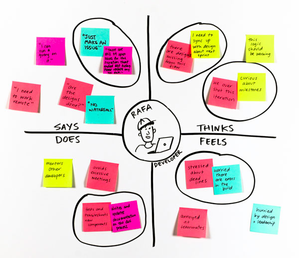
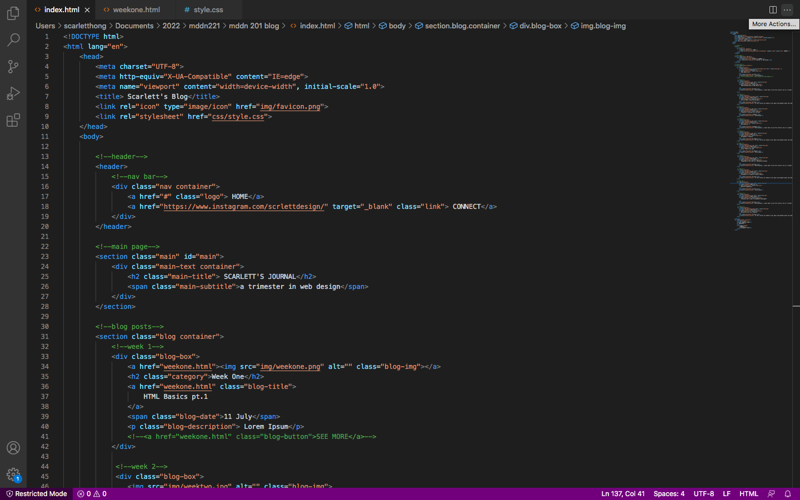

Week One
HTML Basics pt.1 11 JulyI did not get to join the lecture live but watched the prerecorded video on HTML basics. This video covered an introduction to html, including setting up a html file and folder structure, adding text and adding images. I have never coded in HTML before, I did some JavaScript in creative coding 1 last year, but honestly do not remember half of it. I am familiar

Week Two
Understanding Users & HTML Basics pt.2 18 JulyUnfortunately, i wasnt able to join this lecture live so I couldnt participate in the group tutorial activities, however I did manage to watch the recording. In today's lecture we covered understanding user's including User Personas and User Empathy Maps. User Personas were briefly covered in IXXN201 from trimester 1, so I had a little bit of prior knowledge about what they were, but it was good to gain a better understanding of what they are and how to create one. I did not know what an empathy map was before the lecture. To summarise; a user persona is a "character" created based on parts of the presumed customer demographic, to help inform design decisions regarding a 'typical' user to improve the experience for real users. This is important to web design as it allows the designer to gain a better understanding of who is using their website, and what they wish to gain from it therefore resulting in a better overall design. Empathy maps is another method for gaining better understanding of users. Empathy mapping highlights the user's feelings and behaviours whilst completing an interaction. They can be split into four sections: says, thinks, does, and feels. This is useful when it comes to web design as it helps to inform the design as to the user's thoughts and feelings and identifies pain points and areas for improvement. I was cool how the tutorial task was based around Spongebob as it turned out to be a helpful example to understand creating user personas and empathy maps as hes a character that everyone is so familiar with. It was interesting to see everyone's take on SpongeBob as well. It was also helpful as it has made this lecture much more memorable.

Week Three
CSS Box Model & Determining goals 25 JulyIn this lecture we looked at user goals and designer goals and combining them in a Venn diagram to understand the shared goals, from the prerecorded lecture videos was about the CSS box model and looking at margins and padding around elements of a website. The concept of user/designer and shared goals was new to me. It was helpful to get into groups for the lecture task to create a Venn diagram, once again using SpongeBob as the example user and website designed to help users navigate the gym by providing workouts and meal plans. From this the user goals we summarised were wanting to improve his fitness, wanting to learn more about fitness. The designer's goals were to create a website that could teach people about fitness and a website that users would want to use. And so, the shared goals were to create a website that would be easy to use and easy to understand. This is useful as a web designer as it takes what a user wants to get of a website and what the designer wants to get out of a website in order to determine the goals that will guide the process of making a website. The coding task was to create an ordered list and an unordered list with links using last week's content which also helped with thinking for assignment one and choosing a character. The content around the box model was straightforward, it helped me understand the differences between margins, boarders, and padding. I imagine this will be useful when trying to size and space things out when making a website.

Week Four
Flexboxes & Planning user journeys 1 AugustIn this lecture we covered user journeys including user flows and customer journey maps and flex boxes. Journey mapping was something that I was already familiar with from Interaction design last year and in tri 1, so it felt pretty easy and straightforward to me as I had made them many times before I had also made a user flow diagram before as well but was not too sure w

Week Five
CSS Grids pt. 1 8 augustUnfortunately, i wasnt able to join this lecture live so I couldnt participate in the group tutorial activities, however I did manage to watch the recording. In today's lecture we covered understanding user's including User Personas and User Empathy Maps. User Personas were briefly covered in IXXN201 from trimester 1, so I had a little bit of prior knowledge about what they were, but it was good to gain a better understanding of what they are and how to create one. I did not know what an empathy map was before the lecture. To summarise; a user persona is a "character" created based on parts of the presumed customer demographic, to help inform design decisions regarding a 'typical' user to improve the experience for real users. This is important to web design as it allows the designer to gain a better understanding of who is using their website, and what they wish to gain from it therefore resulting in a better overall design. Empathy maps is another method for gaining better understanding of users. Empathy mapping highlights the user's feelings and behaviours whilst completing an interaction. They can be split into four sections: says, thinks, does, and feels. This is useful when it comes to web design as it helps to inform the design as to the user's thoughts and feelings and identifies pain points and areas for improvement. I was cool how the tutorial task was based around Spongebob as it turned out to be a helpful example to understand creating user personas and empathy maps as hes a character that everyone is so familiar with. It was interesting to see everyone's take on SpongeBob as well. It was also helpful as it has made this lecture much more memorable.
Week Six
Assignment 1 Progress 15 augustThis week I worked on finishing my assignment one, as I had an extension for the next Monday, I unfortunately missed the presentations. I already had an idea of the website that I wanted to create and worked on narrowing it down to a website that looks at analyzing the sustainability and ethics of fashion brand. So, I then thought of characters that would be good to base a user persona of and decided Elle Woods from Legally Blonde. The first part

Week Seven
Colour Theory & UX Laws 5 SeptemberOver the mid trimester break I worked on starting assignment 2-1 by sketching out the wireframes by hand. I sketched out the layout for my main pages and included the important content areas and navigation buttons, this included the home page, profile pages, search page, brand page and the trending, curated for you, and best rated pages for both the desktop and mobile version. I then transferred these onto figma by creating simple lofi block frames.

Week Eight
Typography & CSS Grids pt.2 (Responsive Design) 12 SEPTEMBERIn this week's class we did presentations of our assignment 2-1 to get some feedback before the hand in. Over the past week I worked on finalizing the block wireframes that I had made and began to develop a hi-fi wireframe of my home page by adding my fonts, colors, and images the feedback that I got from this was to make the search the search bar appear more obvious and to make it smaller, and to fix the scale of everything in general. This was valuable feedback to use to make my website look more visually affective and cohesive.

Week nine
Assignment 2-1 Progress & EditorX Basics 19 SeptemberI continued to work on finishing my website prototype for assignment 2-1 mostly focusing on creating high fidelity wireframes. I decided to use a muted green colour palette to emulate a natural, calm feeling, referencing the sustainability element of the website. However, I eventually ended up pivoting in another direction after learning about low carbon design in Internet & social media design 201. Because sustainability is an important core value of my website itself, I felt that it would be imperative to make as many changes as possible to design a carbon friendly website, whilst still retaining a visually pleasing look. I did some research and used my prior knowledge about carbon friendly design, and I found that the more variation of colour used, the more energy consumed, and darker colours consume less energy than lighter colours. Therefore, I switched to using black for all the typography, nav bar, and buttons. I used a grey colour where possible to minimize the use of bright white. I also found that the more variation in fonts the more data and energy consumed. Therefore, I stuck with using only two typefaces across the site, lastik and degular display (regular). I realized that I also needed to create a log in page as well as a quiz to determine the users style preference to create a more customized experience. On the home page I added imagery into scrollable frames, to create a carousel effect, which allows the elements I want to be accessible on the homepage and reducing visual clutter. I added buttons to each page and tried to keep these consistent in size and placement on each page. I kept the different pages as consistent as possible by keeping the same style and size of each brand ‘tile’, and I did more experimenting scaling and resized most things down. I also created several more frames that were intended to be pop ups, like save to collections pop up menu and a sort by/ filter menu. I then continued developing these wireframes by adding in interactivity, I linked all the pages to the nav bar and to one another. I wanted to make the buttons more obvious by implementing hover states so that when the mouse hovers over a tile the outline becomes slightly thicker and the image becomes brighter, when hovering over clickable text an underline, or a perimeter will appear and when hovering over buttons they will change color. I also found it necessary to include a gallery-like feature for each brand tile so that the user will be able to see more photos from the brand without having to click through to the brand page, which I felt would make the UI process more efficient for the user and save time, I added arrows and circles on the images to indicate this to the user so that when the image is clicked it rotates to a different one. I made sure to follow UX Laws with my websites design. The UX Laws that I included were Fitt’s Law by making sure the buttons were obvious and easily accessible Hicks law by splitting up the four questions into four different pages, rather than having all the questions on one page, this breaks down a complex task into more achievable smaller chunks, Miller’s law by only displaying three recommendations, and Jakob Law by looking at other familiar websites like Youtube and Pinterest as design precedents.
Week ten - Eleven
EditorX Fundamentals & Thinking like a Coder 26-31 SEPTEMBERThis week's class we had an EditorX example video where we were shown a run through of creating a website on EditorX, this covered adding images, and text, creating grids to display content, adding buttons, and making it responsive to different screens. This lecture was useful to familarise with EditorX for my website.

WEEK TWELVE - STUDY BREAK
Assignment Development 10-17 OCTOBERAs this is the last few weeks of the year, I have had heaps of hand-ins and been super busy, so I knew I had to get started with coding my blog as soon as possible. I knew that I wanted to create a simple but still visually pleasing blog as I had stitched myself up by not starting this sooner. I started this process by going through all the prerecorded lecture content to remind myself of all the coding we covered. I also looked at YouTube tutorials and other online examples of blog code. I decided that for my main page I just wanted a header image and a grid to display a prev
SUMMARY
Reflection over the trimester 24 OCTOBERAt the beginning of the trimester, I had next to no knowledge of Web design, I had previously taken interaction design classes so had some prior knowledge on user-based design and I had taken creative coding last year, so I knew a little bit of JavaScript, but I had no knowledge at all about HTML and CSS. Over the trimester we covered a lot of web design